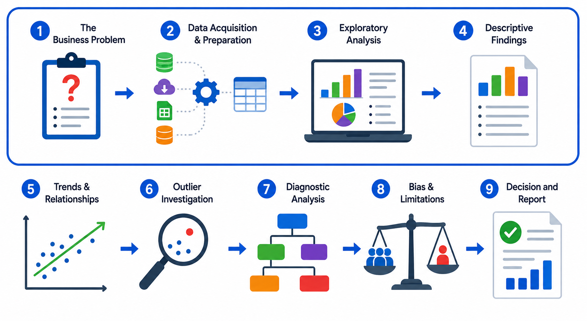

Analyze Data Sets
Organizations rarely begin data analysis with a ready-made answer. They begin with a business need, a set of available data sources, and a question that must be understood before it can be solved. That is why analysis starts before any chart is built or any conclusion is drawn. An analyst must understand the business problem, the information system that shapes the data, and the structure and quality of the dataset itself. AI can help with this work, but it also introduces concerns about reliability, bias, transparency, explainability, and decision risk.
This chapter focuses on the first part of the data-analysis workflow: defining the business problem, acquiring and preparing the data, exploring the data, and describing what happened. Those steps form the foundation for the later stages of diagnosis, interpretation, and decision-making. The workflow continues after this chapter with trends and relationships, outlier investigation, diagnostic analysis, bias and limitations, and finally decision and report.

1. The Business Problem
A good analysis begins with a clear business problem, not with a dataset. If the problem is vague, the analysis will be vague too. The first task is to define the organizational issue as precisely as possible so the analyst knows what question needs to be answered and what data is likely to matter.
For example, “analyze customer data” is too broad to guide real work. A stronger problem statement would be, “customer sales fell during the last two quarters, and management wants to understand where the decline is occurring and what factors may be associated with it.” That version narrows the scope, points to a time frame, and suggests the kinds of variables that may need to be examined. Other business problems might include a rise in support requests, a drop in website conversions, slower inventory turnover, or uneven sales across regions.
This step matters because analysis is meant to support action. A company may need to improve a process, explain a trend, reduce costs, or identify an opportunity. A specific problem statement keeps the analyst focused on the decision the organization is trying to make instead of letting the work drift into unnecessary detail. It also helps determine which data sources should be included and which should be left out.
Comprehension Check 1 of 5
2. Data Acquisition and Preparation
Once the business problem is clear, the analyst must identify the data needed to investigate it. Organizations rarely have one perfect dataset waiting to be analyzed. Analysts may need to select relevant sources, choose appropriate fields, combine approved extracts, or assemble a working dataset from information stored in different systems. This is the practical purpose of data acquisition and preparation.
Chapter 6 focused on improving data quality through cleaning, standardization, transformation, and validation. In this chapter, the emphasis is different: deciding which data is relevant to the business question and confirming that it is appropriate to use. The analyst should document which sources and fields were selected, which records are included or excluded, and what definitions or assumptions control the analysis. Any additional preparation should be limited to what is necessary to create the working dataset.
Acquisition also requires attention to permissions, privacy, provenance, and accountability. Analysts should know where the data came from, when it was collected, how it has been changed, who owns it, and who is responsible for its reliability. They should also confirm that the data may be used for the intended purpose, especially when it includes personal, financial, health, or other sensitive information. These checks do not replace the detailed governance principles introduced earlier; they apply those principles to a specific analytical task.
Data may be stored in different environments depending on how it is created and used. Relational databases commonly store structured operational data in tables. Data warehouses hold organized data prepared for reporting and analysis across an organization. Data lakes can store large amounts of raw or semi-structured material, such as files, logs, images, and other formats. Understanding where data lives helps the analyst choose an appropriate source and interpret the limits of what that source can support.
The goal of this stage is not to repeat the full data-cleaning process. It is to create a relevant, documented, and appropriately prepared working dataset that can be explored and summarized. The analyst must be able to explain what data was selected, why it was selected, and what the resulting dataset can and cannot show.
Comprehension Check 2 of 5
3. Exploratory Analysis
After the data has been prepared, the analyst begins to explore it. This is not yet the stage for final conclusions. Instead, it is the stage for learning what the data contains and what it might be able to tell us. The analyst looks at structure, quality, patterns, relationships, and unusual cases, using summaries, visualizations, and observations to uncover clues.
Exploratory analysis can reveal a great deal. It may show that one region has unusually strong sales, that one product category has many missing values, that traffic spikes on certain days of the week, or that one customer segment behaves differently from the others. It can also reveal problems in the dataset itself, such as outliers, missing values, duplicates, or data that appears to be constrained by the underlying system in a way that affects interpretation. A large transaction amount, for example, may be a legitimate sale or it may be an error worth investigating.
This stage is also where new questions often appear. An analyst may begin by studying customer behavior and then notice that the trend differs by age group, marketing channel, or geographic location. That discovery leads to a better question. The process is not just about finding an answer; it is also about learning which follow-up questions matter.
Context is essential here. Data does not explain itself. A change in website traffic might reflect increased interest, a marketing campaign, a seasonal event, or a system issue. A decline in orders might mean lower demand, but it might also point to a broken payment process. Exploratory analysis helps reveal where the important questions are hiding.
Comprehension Check 3 of 5
4. Descriptive Findings
Once the data has been explored, the analyst can summarize what happened. This is the descriptive stage of analysis. The goal is to report observed results clearly without assuming why they occurred. Descriptive findings answer the question, “What happened?” rather than, “Why did it happen?”
Descriptive Statistics
Descriptive statistics summarize the main features of a dataset. Counts and frequencies show how often values occur, while percentages help compare categories. Measures of center include the mean, median, and mode. Measures of spread include the range, quartiles, and standard deviation, which describes how closely values cluster around the mean. The appropriate statistic depends on the type of data and the question being asked.
Percentages and rates should be reported with their base populations. For example, 20 complaints among 100 customers represents a 20% rate, while 20 complaints among 10,000 customers represents only a 0.2% rate. Including the denominator helps decision-makers interpret the result accurately.
Examples of descriptive findings might include statements such as: revenue was $2.2 million, the average order total was $53, or the East region generated 29% of sales. The mean can be influenced by unusually large or small values, so the median may better represent a typical result when the data is uneven. These measures provide a clear snapshot of the observed situation.
Descriptive findings should remain separate from diagnosis. If sales declined, that fact belongs in a descriptive summary. The reason for the decline belongs in a later analysis. Descriptive statistics show what was observed, but they do not by themselves explain why it happened or predict what will happen next.
Comprehension Check 4 of 5
Why This Workflow Matters
These first four steps create the structure for sound analysis. They move the work from a business problem, to a prepared dataset, to a thoughtful exploration, and finally to a clear summary of the observed results. When each step is handled carefully, the organization is much better prepared for the later stages of interpretation and decision-making.
AI may accelerate the process, but it does not replace the need for a well-defined problem, a dependable dataset, and careful human judgment. The analyst still decides what question matters, what data belongs in the analysis, and which findings are strong enough to report.
Comprehension Check 5 of 5
Critical and Analytical Thinking with AI Outputs
Analytical thinking involves examining evidence, identifying relationships, evaluating alternatives, and drawing conclusions that are supported by data. AI systems can summarize information and produce plausible explanations, but they do not automatically know whether a conclusion is justified. An AI-generated analysis may confuse correlation with causation, overlook an important variable, use an inappropriate comparison, or describe a pattern that is not statistically or practically meaningful. Critical thinking requires asking how the result was produced, what evidence supports it, what assumptions were made, and what information may be missing.
In professional data work, students should learn to treat AI output as a proposal rather than a final answer. Useful questions include: Does the analysis answer the original question? Are the calculations correct? Were the right records and variables used? Could another explanation account for the pattern? What additional data would change the conclusion? These questions help counter automation bias, which occurs when people accept an automated recommendation without sufficient review. Critical evaluation is a career skill for analysts, consultants, managers, developers, and any professional who uses AI to support organizational decisions.
Chapter Completion
Answer all five comprehension questions, then check your work.
Chapter complete
Copy or write down this access code. You will need it later in class to receive your points.
data-analysis